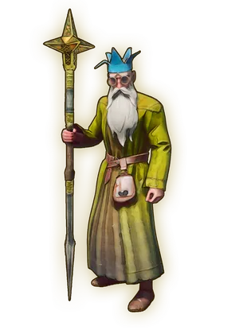

First Steps is a primary quest that teaches you the basics of the game before introducing you to the narrative. It is recommended for first-time players to not skip through these quests and jump into Dragon Slayer so that they can fully understand the mechanics of the game.
Overview
Walkthrough
Begin your adventure!


Go and speak to the Wise Old Man in the temple. He will tell you about the dragon and offer to teach you about the basics, which you can either accept or refuse. If you refuse it, you can talk with him again in Bramblemead Village to finish the quest. If you accept the tutorial, he will send you to Doric just outside the temple, starting Getting Started.
Before Setting Off...
This step is covered, in more detail, through the following quest articles: Getting Started, Ratcatcher, and Rune Mysteries.
Doric will teach you how to make processing stations, introduce to you the building system, and then send you off to Vannaka. The slayer master will send you to fight off nearby rats, teach you how to cook your food, and help you know which way the pointy end goes before sending you to Zanik. When you talk to Zanik, she will help you learn the magic system, crafting runes for spells, and even unlock a spell or two. When she has taught you everything, she'll then send you off to the Wise Old Man.
Finishing up...
After completing the above section, or if you skipped the tutorial, go to Bramblemead Village and find the Wise Old Man on the first floor of a ruined building at the far end of the village. Talk to him to learn about the next step in your adventure.
Congratulations. Quest complete!
Rewards
Required to Complete
This quest is required to complete the following quest(s):
This guide is the wiki's First Steps article, by its editors, reformatted for this site. Licensed CC BY-NC-SA 3.0.